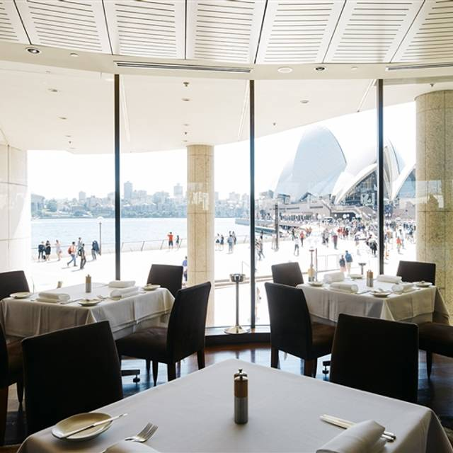

Die Unternehmung Swiss Bakery and Pastry of Sydney wurde am 01.10.2019 von Mike Meier und Lisa Häberli gegründet.
Viel Glück führte zur Eröffnung an der 483 Gorge Street in Sydney, wo die Produktion und der erste Laden erstellt wurde.
Gleich neben der Town Hall Station im Zentrum von Sydney und
nahe dem Darling Harbour.

Erste Lieferungen an das Aria Restaurant Sydney gleich neben dem Opernhaus am Circular Quay.
Erwähnung im Trip Adviser als Adresse die man gesehen haben muss.